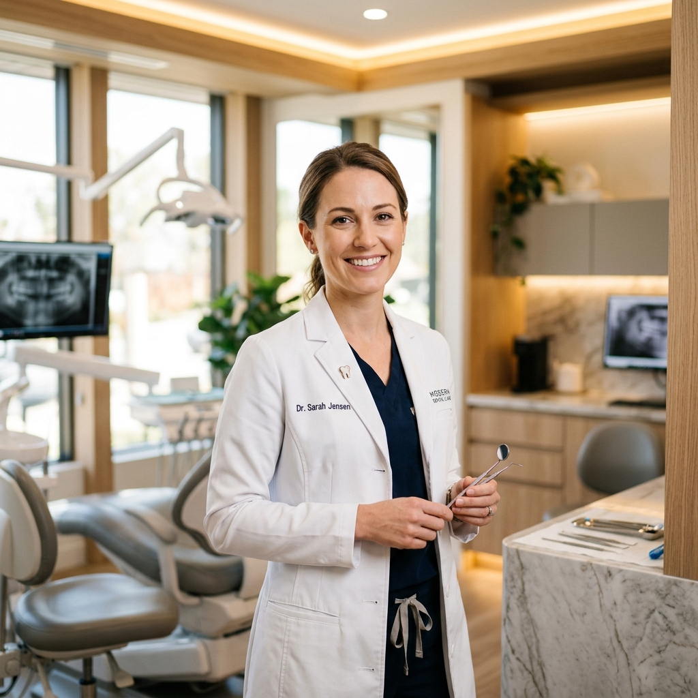
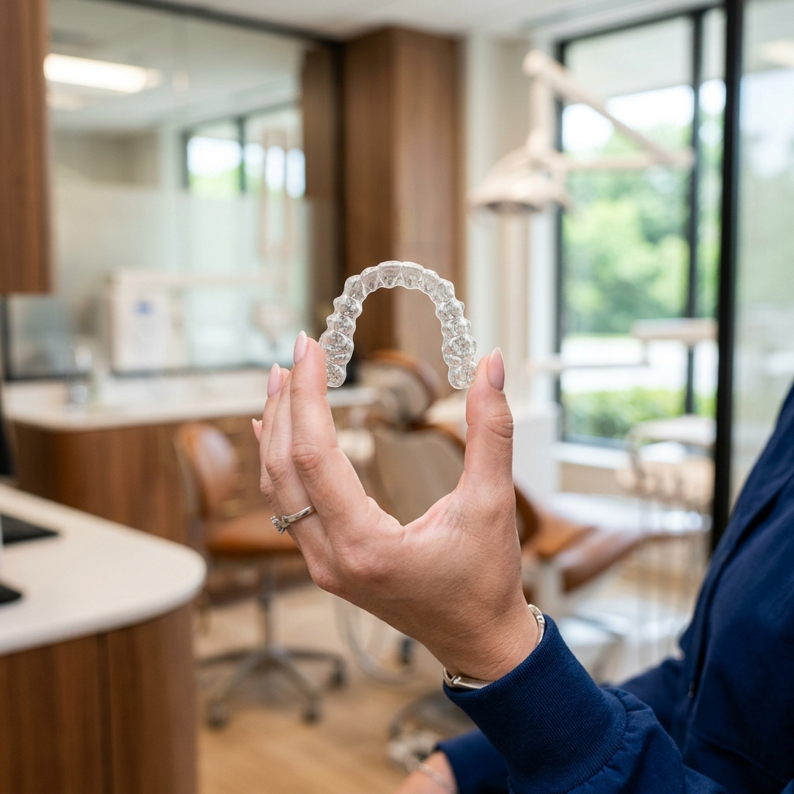

Combinamos tecnologia de ponta, estética refinada e atendimento humanizado para criar sorrisos que transformam vidas.

Oferecemos o que há de mais moderno na odontologia mundial, com foco em resultados naturais e duradouros.

O alinhador invisível líder mundial. Confortável, removível e praticamente imperceptível para corrigir seu sorriso com rapidez.
Saber maisLâminas ultrafinas de porcelana personalizadas para corrigir cor, formato, tamanho e espaçamento dos dentes de forma harmônica.
Saber maisRecuperação segura e precisa de dentes perdidos com cirurgia guiada por 3D, reduzindo o tempo de recuperação e o desconforto.
Saber maisDentes visivelmente mais brancos em poucas sessões. Um tratamento seguro, monitorado e com resultados brilhantes e duradouros.
Saber maisVeja com seus próprios olhos o poder de uma restauração estética completa. Arraste o marcador central para comparar o resultado antes e depois.
Sorrisos planejados de acordo com as linhas naturais do seu rosto.
Utilização das cerâmicas e resinas mais resistentes do mercado.
Fundada com o propósito de redefinir a experiência de ir ao dentista, a Sorriso Elevado alia conforto máximo a protocolos de saúde bucal de ponta. Nosso espaço foi projetado para transmitir tranquilidade e bem-estar.
Cada plano de tratamento é exclusivo, desenhado por profissionais que entendem que cada sorriso é único e merece ser tratado como uma obra de arte.
Ambiente relaxante para sua espera.
Padrões hospitalares de esterilização.
Corpo clínico composto por mestres e doutores com constante atualização internacional.
Mais de 12 anos dedicados a devolver a função e autoestima de pacientes com implantes guiados de alta precisão.
Apaixonada pela arte de criar facetas e lentes de porcelana personalizadas que trazem naturalidade e luz ao sorriso.
Nossa infraestrutura digital permite tratamentos mais confortáveis, previsíveis e até 3x mais rápidos do que os métodos convencionais.
Com o escaneamento intraoral, capturamos um modelo digital tridimensional exato da sua boca em segundos. Esse processo serve para planejar alinhadores invisíveis e próteses com precisão milimétrica.
O laser terapêutico de baixa intensidade é utilizado para acelerar a cicatrização pós-cirúrgica, reduzir inchaços e tratar sensibilidade dentária de forma rápida e completamente indolor.
Indicada para pacientes com medo ou ansiedade (odontofobia), a sedação consciente por inalação de óxido nitroso induz um estado de profundo relaxamento e serenidade, mantendo você acordado e comunicativo.
Nossa maior recompensa é ver a transformação na vida e na confiança de quem confia em nosso trabalho.
Escolha o dia, horário e o tratamento desejado abaixo. Nossa equipe entrará em contato via WhatsApp para confirmar a sua reserva.
(11) 98765-4321
Av. Paulista, 1000 - Cj. 1202 - Bela Vista, São Paulo/SP
Olá, Julia. Reservamos uma pré-agenda para o dia --/--/---- no período da -- para o tratamento de --.
Nossa equipe entrará em contato via WhatsApp nas próximas 2 horas para finalizar e confirmar o horário exato da sua consulta.
Ficou com alguma dúvida? Separamos as perguntas mais recorrentes de nossos pacientes para te ajudar. Caso queira falar com um especialista, clique no botão de atendimento.
Ainda tenho dúvidasO Invisalign consiste no uso de uma sequência de alinhadores plásticos transparentes e removíveis feitos sob medida para sua boca por meio de planejamento 3D computadorizado. Cada alinhador deve ser usado por cerca de 7 a 14 dias antes de ser substituído pelo próximo, movimentando gradualmente seus dentes para a posição desejada.
Não. A porcelana odontológica de alta qualidade utilizada em nossas lentes é um material não-poroso altamente resistente a manchas. Diferentemente do esmalte natural do dente ou das resinas, ela não mancha com o consumo de café, vinho tinto, açaí ou tabaco, mantendo o brilho e a cor inicial por muitos anos.
Não. A cirurgia de implante é realizada sob anestesia local eficaz e, se o paciente desejar, com nossa sedação consciente com óxido nitroso, tornando o procedimento totalmente indolor. Além disso, a tecnologia de Cirurgia Guiada 3D nos permite realizar cortes minúsculos sem pontos de sutura na maioria dos casos, o que resulta em um pós-operatório muito mais rápido, sem inchaço significativo ou dor.
Trabalhamos exclusivamente no modelo de atendimento particular para garantir o tempo adequado e a qualidade de ponta em cada consulta. No entanto, fornecemos toda a documentação necessária, relatórios clínicos e recibos para que você possa solicitar o reembolso integral ou parcial junto ao seu plano de saúde (como Bradesco, SulAmérica, Amil, Care Plus, etc.).